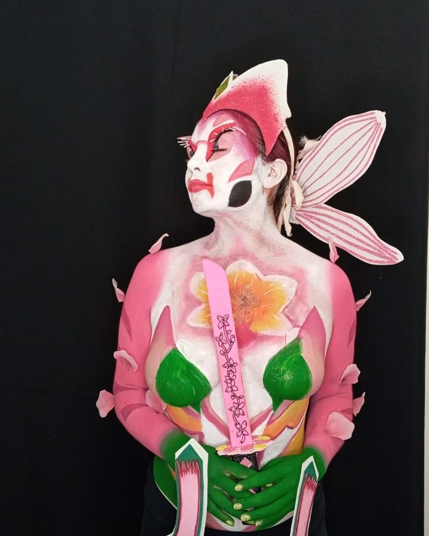

Body-Paint


El body paint es una técnica ideal para crear estilos únicos y originales desde cero, transformando el cuerpo en un lienzo vivo. A través de trazos, colores y texturas, podemos dar vida a cualquier idea o concepto, logrando transformaciones sorprendentes que expresan creatividad, arte y personalidad. Esta forma de maquillaje permite explorar infinitas posibilidades, convirtiendo cada cuerpo en una obra de arte en movimiento, perfecta para eventos, sesiones fotográficas o performances impactantes.